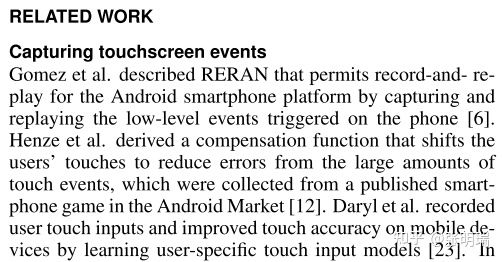
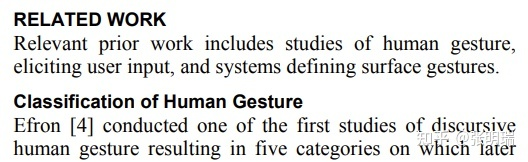

Related Work
来源：https://zhuanlan.zhihu.com/p/368677897

（一种很典型的行文方式：把所有工作摊煎饼地摆出来，反正我列出来了，哪个有用你自己找)
“做这个工作的有ABCD, A 做了xxx，B做了xxx，C和D做了xxx” ——类似的句式，不要再这样写啦。写相关工作的时候，作者应该是充当一种指路人，或者说书人的角色：在详细介绍核心内容之前，把故事背景在读者面前慢慢地，有条理地展开。
所以，你需要把面前的相关文献们，用一条线串起来，来向读者展现它们之间，以及和自己工作之间的关联。这些逻辑可能是递进的：例如文章ABC开创了某个领域，DEF在这个问题领域提出了集中思路，GHI则是在各个思路下的改进——那么我们就可以先说用总领的话来叙述ABC，然后用并列的方式讲DEF，最后可以一笔带过GHI（如果它们不是那么重要的话）。
这些逻辑可能是并列的：例如文章ABC用了X技术来解决某个问题，DEF用了Y技术，而GHI则用了DrustZ的技术——那么我们可以使用分条列举的方式，先写”为了解决某个问题，大家采用了不同的方法“，然后列出1）X技术[ABC] 2）Y技术[DEF] 3) DrustZ的技术[GHI] 。这样把类似的文章集中起来，大家看着也顺溜。
还有些其他不怎么常见的逻辑顺序，比如分-总（例如先有零散的工作，后来有一篇文献把它们综合了起来）。但是当我们意识到文献内在的逻辑顺序，并且把它们按照逻辑列举出来的时候，就已经比许多论文的相关文献高出了不止一个档次：）
更加高级的写作方式，则是与其列举文献，更像是让文献为作者自己的陈述服务。你在阅读的过程中，很难感觉到作者在刻意塞进一些文献来充数；相反，作者是在整理自己的思路，顺便引用了关键的文献来加以佐证。
开头不要直接列别人的文章，先概括地说一下这个段落的主题；写完一个小部分，不要立即跳到下一段开始写另一个部分，而是在末尾写一个过渡句：“以上就是人们在X领域的研究，但是随着Y技术的进步，更多的人把目光转移到了Z上”，“对于Y技术在X领域的研究已经介绍许多，但在另一个Z方面，相同的技术也有许多应用”。拿出小学作文满分的本领来！
我老板写Related Work有一个习惯，从来不会在大标题下什么都不写就直接跳到第一个小标题（例如上边那个反例）。在大标题的下面，用一些总领的语言来概括+引出接下来的小章节，其实也是一个很好的过渡方式。一切为了读者服务！

结果
作者：平海鸥鸣
链接：https://zhuanlan.zhihu.com/p/406397855
来源：知乎
著作权归作者所有。商业转载请联系作者获得授权，非商业转载请注明出处。
将研究成果和研究目的联系起来
Simple statistical analysis was used to …
The next question asked the informants …
To assess X, the Y questionnaire was used.
Changes in X and Y were compared using …
Regression analysis was used to predict the …
To distinguish between these two possibilities, …
The first set of analyses examined the impact of …
描述图标中的研究成果
As shown in Figure 1,
As can be seen from the table (above),
From the graph above we can see that
It can be seen from the data in Table 1 that
It is apparent from this table that very few …
The most interesting aspect of this graph is …
In Fig.10 there is a clear trend of decreasing …
What is striking about the figures in this table is …
What is interesting about the data in this table is that …
The differences between X and Y are highlighted in Table 4.
From the chart, it can be seen that by far the greatest demand is for …
From this data, we can see that Study 2 resulted in the lowest value of …
只是描述研究结果
正面的
The mean score for X was …
Further analysis showed that …
Further statistical tests revealed …
A two-way ANOVA revealed that …
On average, Xs were shown to have …
Strong evidence of X was found when …
This result is significant at the p = 0.05 level.
The results, as shown in Table 1, indicate that …
A positive correlation was found between X and Y.
There was a significant positive correlation between …
负面的
No difference greater than X was observed.
No significant differences were found between …
None of these differences were statistically significant.
No significant difference between the two groups was evident.
No significant reduction in X was found compared with placebo.
No evidence was found for non-linear associations between X and Y.
No significant correlation was found between X scores and the Y scores (p = .274)
将之前的结果（正面的或负面的）——进行简单的现象描述
Stimulation of X cells with Y did not increase the …
With successive increases in intensity of the X, the Y moved further to …
Following the addition of X, a significant increase (P<0.05) in the Y was recorded.
When X cells were stimulated with Y, no significant difference in the number of Z was detected.
如果发现有意思的结果
This result is somewhat counterintuitive.
Interestingly, this correlation is related to …
The more surprising correlation is with the …
Surprisingly, only a minority of respondents …
The most surprising aspect of the data is in the …
The correlation between X and Y is interesting because …
The most striking result to emerge from the data is that …
Interestingly, there were also differences in the ratios of …
The single most striking observation to emerge from the data comparison was …
然后，就开始说我们的对自己研究结果的解释
This result may be explained by the fact that …
There are, however, other possible explanations.
These relationships may partly be explained by …
There are several possible explanations for this result.
A possible explanation for these results may be the lack of adequate …
These differences can be explained in part by the proximity of X and Y.
描述另一个实验结果
A comparison of the two results reveals …
Turning now to the experimental evidence on …
Comparing the two results, it can be seen that …
The next section of the survey was concerned with …
In the final part of the survey, respondents were asked …
最后肯定就是对现有研究工作进行的总结
Overall, these results indicate that …
In summary, these results show that …
In summary, for the informants in this study, …
Together these results provide important insights into …
Taken together, these results suggest that there is an association between …
The results in this chapter indicate that … The next chapter, therefore, moves on to discuss the …